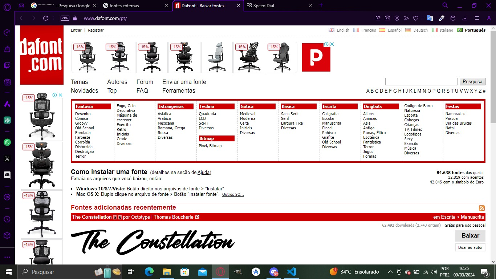

Precisamos de um arquivo de fonte (geralmente TTF ou OTF) é possivel conseguir em um site como por exemplo o Dafont.com, apos baixar a fonte de sua escolha vamos para o codigo CSS utilizar a regra @font-face que vamos definir qual o arquivo, o tipo de arquivo e declaramos a sua familia para ser utilizado na font-family.
